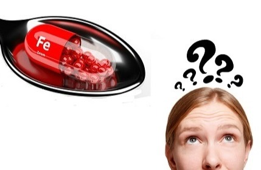
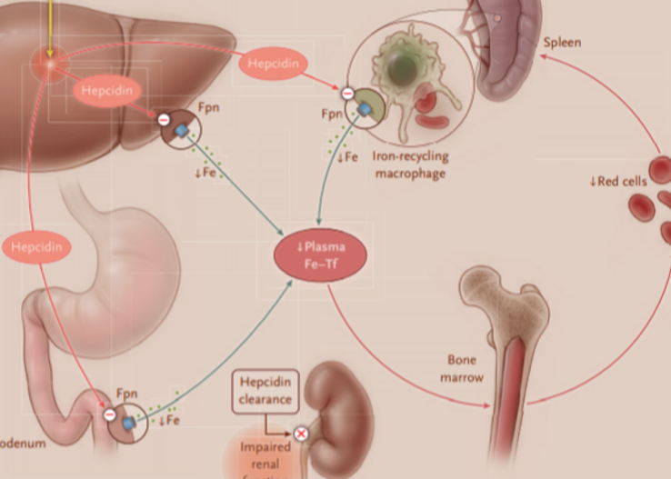
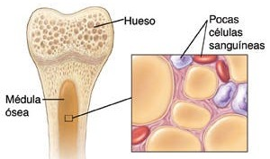

Tipos y causas de anemia
Los distintos tipos de anemia constan de causas diversas:

Anemia por deficiencia de hierro
Este es el tipo más común de anemia y resulta de la deficiencia de hierro.
Read more..

Anemia por deficiencia de vitaminas
Además del hierro, el cuerpo necesita folato y vitamina B-12 para producir suficientes glóbulos rojos sanos. Read more..

Anemia de inflamación
Ciertas enfermedades, como el cáncer, el VIHoSIDA, la artritis reumatoide, Read more..

Anemia aplásica
Esta anemia poco frecuente y potencialmente mortal ocurre cuando el cuerpo no produce suficientes glóbulos rojos. Read more..